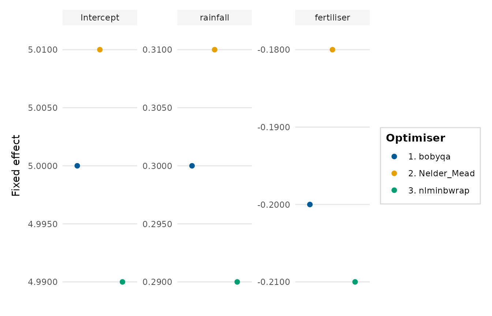
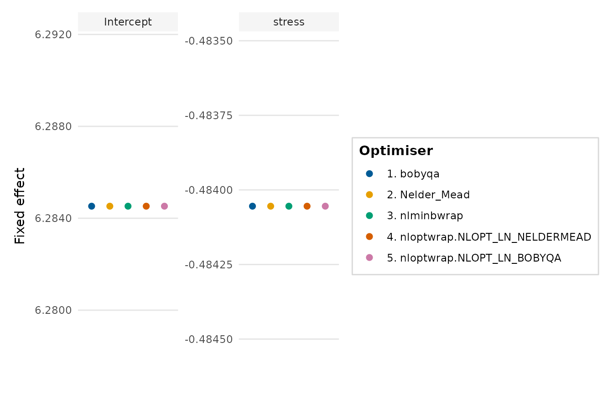

Visualises how the fixed-effect estimates of a mixed model vary across the
optimisers tried by lme4::allFit(). It offers a quick check that a model
has settled on a stable solution: tight clusters of points indicate
agreement between optimisers, whereas scatter signals a fragile fit.
Usage
optimizer_fixef_plot(
x,
intercept = TRUE,
select_terms = NULL,
interaction = c("times", "asterisk", "colon", "space"),
labels = NULL,
number_optimizers = TRUE,
free_y = TRUE,
ncol = NULL,
point_size = 2,
palette = NULL,
y_lab = "Fixed effect",
title = NULL
)Arguments
- x
Either the object returned by
lme4::allFit(), or a data frame with one row per optimiser-by-term combination (columns such asoptimizer,termandvalue/estimate).- intercept
Whether to keep the intercept panel. Defaults to
TRUE.- select_terms
Optional character vector of terms to display (the intercept is always kept when
intercept = TRUE).- interaction
Passed to
format_terms()for the panel titles.- labels
Optional named character vector renaming the term panels, e.g.
c(conditionunrelated = "Unrelated priming"). Whenxis a rawlme4::allFit()object, names are prettified to the effect (variable) name automatically (e.g.conditionunrelatedtocondition) and these labels override that default.- number_optimizers
Whether to prefix each optimiser name with a number, so that the legend doubles as an index.
- free_y
Whether to give each panel its own y-axis range. This is advisable, because the intercept and the slopes usually occupy very different scales.
- ncol
Number of facet columns. If
NULL, chosen automatically.- point_size
Point size.
- palette
Colours for the optimisers; defaults to
depictr_palette().- y_lab, title
Axis label and plot title.
Value
A ggplot2::ggplot object.
Details
The function refactors the original plot.fixef.allFit() gist, using
faceting (one panel per fixed effect, each with its own y-axis) in place of
the earlier hand-built layout. It also accepts a plain data frame, so it can
be used without 'lme4'.
Examples
# Without lme4, build the input data frame directly:
set.seed(1)
df <- expand.grid(
optimizer = c("bobyqa", "Nelder_Mead", "nlminbwrap"),
term = c("(Intercept)", "rainfall", "fertiliser")
)
df$value <- c(5, 5.01, 4.99, 0.3, 0.31, 0.29, -0.2, -0.18, -0.21)
optimizer_fixef_plot(df)

# \donttest{
if (requireNamespace("lme4", quietly = TRUE)) {
m <- lme4::lmer(life_satisfaction ~ stress + (1 | region),
data = wellbeing_survey)
af <- lme4::allFit(m)
optimizer_fixef_plot(af)
}
#> bobyqa : [OK]
#> Nelder_Mead : [OK]
#> nlminbwrap : [OK]
#> nloptwrap.NLOPT_LN_NELDERMEAD : [OK]
#> nloptwrap.NLOPT_LN_BOBYQA : [OK]

# }